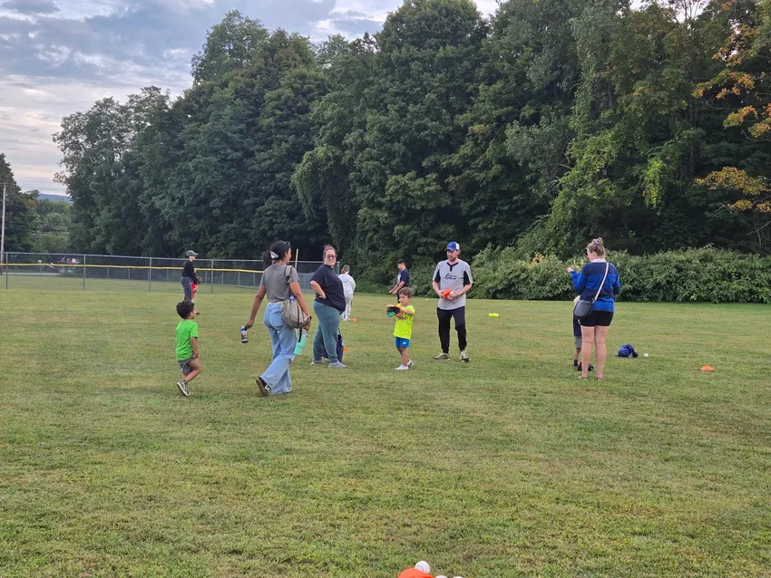
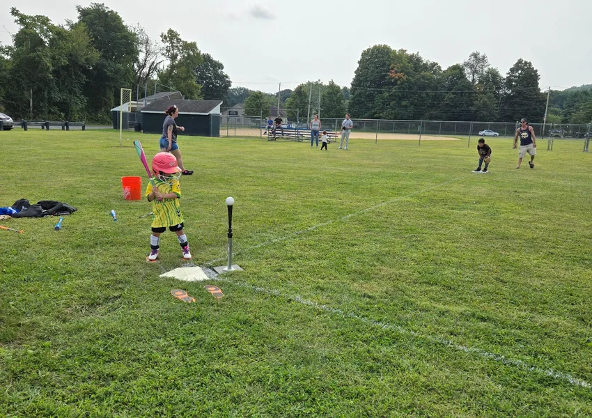

FUN-damentals

Players and their parents learn together through short activities that introduce throwing, catching, hitting and running the bases.

FUN-damentals and Tee Ball give young players their first chance to hit, throw, catch and run the bases. Both programs welcome boys and girls, including kids who want to play baseball or softball as they get older.
FUN-damentals and Tee Ball are open to boys and girls. Tee Ball uses your child’s age on . FUN-damentals players must be 4 years old in April 2027.

Players and their parents learn together through short activities that introduce throwing, catching, hitting and running the bases.

Players hit from a tee and learn where to run and how to field the ball. Choose Monday or Tuesday practice when you register. Both groups play on Saturdays.
Read the first-season family guide · Check league eligibility
A helmeted Fishkill player steps up to home plate and takes a swing at the ball on the tee. This nine-second clip has no audio.